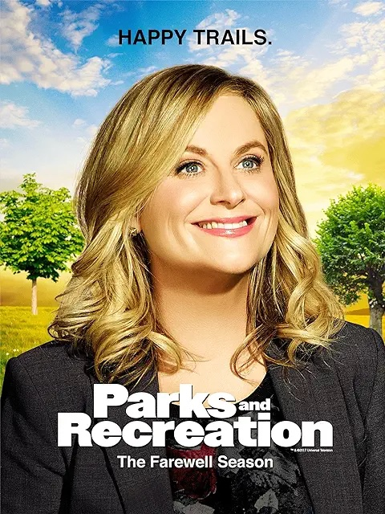

Sitcoms everyone should watch, at least once
If you think you don’t like sitcoms, you haven’t watched the right ones. Sure, The Office and Friends have earned their spot in the TV hall of fame, but they’re nowhere near the best of the genre. As an avid television watcher and sitcom fan, here are 10 of the best sitcoms I think everyone needs to watch at least once.
It's Always Sunny in Philadelphia
"Depraved underachieving might look easy, but for the egocentric Mac, Charlie, Dennis, Frank and Dee, it's an art form. "It's Always Sunny in Philadelphia" follows "The Gang," the owners of the unsuccessful Paddy's Pub; a group of degenerates who loves nothing more than to scheme, conspire, and mostly revel in each other's misery. Whether gaming the welfare system, exploiting dumpster babies, pretending to be crippled, impersonating officers, or faking funerals, The Gang never stoops too low in the name of making a buck."
The Good Place

"When Eleanor Shellstrop finds herself in the afterlife, she's both relieved and surprised that she's made it into the Good Place. But it doesn't take long for Eleanor to realize she's there by mistake. She hides in plain sight from the Good Place's architect, Michael, and his all-knowing assistant, Janet. Her seemingly perfect neighbors, Tahani and Jason, and open-hearted soul mate, Chidi, help her realize that it's never too late to change. With the help of her new friends -- and a few enemies -- Eleanor becomes determined to shed her old way of life in hopes of discovering a new one in the afterlife."
Modern Family

"Told from the perspective of an unseen documentary filmmaker, the series offers an honest, often-hilarious perspective of family life. Parents Phil and Claire yearn for an honest, open relationship with their three kids. But a daughter who is trying to grow up too fast, another who is too smart for her own good, and a rambunctious young son make it challenging. Claire's dad, Jay, and his Latina wife, Gloria, are raising two sons together, but people sometimes believe Jay to be Gloria's father. Jay's gay son, Mitchell, and his partner, Cameron, have adopted a little Asian girl, completing one big -- straight, gay, multicultural, traditional -- happy family."
Community
"When fast-talking lawyer Jeff Winger finds his degree has been revoked, he is forced to go back to school at Greendale Community College. Hoping to score points with a pretty coed, he invents a study group and invites her to join it. Imagine his surprise when she's not the only one who shows up for help with Spanish from the 'board-certified tutor' he proclaims himself to be. Though his command of the language is anything but good, the members continue to meet and end up learning a lot about themselves."
Futurama
"Accidentally frozen, pizza-deliverer Fry wakes up 1,000 years in the future. He is taken in by his sole descendant, an elderly and addled scientist who owns a small cargo delivery service. Among the other crew members are Capt. Leela, accountant Hermes, intern Amy, obnoxious robot Bender and lobsterlike moocher "Dr." Zoidberg."
Schitt's Creek
"In the sitcom "Schitt's Creek," a wealthy couple -- video store magnate Johnny and his soap opera star wife Moira -- suddenly find themselves completely broke. With only one remaining asset, a small town called Schitt's Creek, which the Roses bought years earlier as a joke, this once-wealthy couple must give up life as they know it. With their two spoiled children in tow and their pampered lives behind them, the Rose family is forced to face their newfound poverty head-on and come together as a family to survive."
30 Rock
"Based more-than-loosely on backstage shenanigans at `Saturday Night Live', `30 Rock' centres on young Liz Lemon, currently head writer for a live sketch-comedy show in New York. Complications follow when the network's new president orders Liz to hire mentally unstable movie star Tracy Jordan to join the cast, throwing neurotic leading lady (and Liz's best friend) Jenna Maroney into a tizzy. Liz tries to juggle all the egos around her while trying to chase her own dream."
Abbott Elementary
"A group of dedicated, passionate teachers -- and a slightly tone-deaf principal -- find themselves thrown together in a Philadelphia public school where, despite the odds stacked against them, they are determined to help their students succeed in life. Though these incredible public servants may be outnumbered and underfunded, they love what they do -- even if they don't love the school district's less-than-stellar attitude toward educating children."
Parks and Recreation
"Leslie Knope, a midlevel bureaucrat in an Indiana Parks and Recreation Department, hopes to beautify her town (and boost her own career) by helping local nurse Ann Perkins turn an abandoned construction site into a community park, but what should be a fairly simple project is stymied at every turn by oafish bureaucrats, selfish neighbours, governmental red tape and a myriad of other challenges. Leslie's colleague Tom Haverford, who delights in exploiting his position for personal gain, is as likely to undermine her efforts as to help her, while her boss, Ron Swanson, is adamantly opposed to government in any form, even though he's a bureaucrat himself."
That 70's Show
"Set in the mood ring and polyester era of the 1970s, the programme is a retro-hip situation comedy about an eclectic group of friends on the verge of adulthood. The group live in the suburbs of Wisconsin, where they yearn for independence amid the growing pains of becoming adults."